ЛР1. Работа с сокетами
Цель работы: понять принципы межсокетного взаимодействия в вебе и научиться реализовывать базовую архитектуру клиент-сервер.
Код лежит рядом с отчетом, для каждого задания своя папка от task1 до task5. Скрипты я запускал из этих папок. Везде используется только стандартная библиотека Python, сервер слушает localhost:8080.
Практическое задание 1. Обмен сообщениями по UDP
UDP работает без установления соединения. Сервер просто привязывает сокет к адресу и ждет датаграмму. Метод recvfrom возвращает не только данные, но и адрес отправителя, по нему сервер и отвечает через sendto. Клиенту connect не нужен.
Сервер:
import socket
server = socket.socket(socket.AF_INET, socket.SOCK_DGRAM)
server.bind(("localhost", 8080))
print("Сервер запущен")
while True:
data, addr = server.recvfrom(1024)
print(f"Сообщение от {addr}: {data.decode()}")
server.sendto("Hello, client".encode(), addr)
Клиент:
import socket
client = socket.socket(socket.AF_INET, socket.SOCK_DGRAM)
client.sendto("Hello, server".encode(), ("localhost", 8080))
data = client.recv(1024)
print(f"Ответ сервера: {data.decode()}")
client.close()
Пример работы. Сервер:
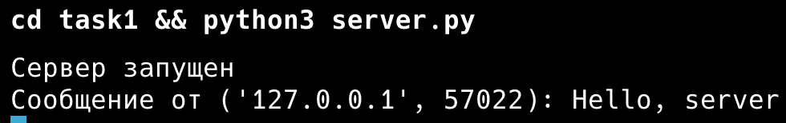
Клиент:
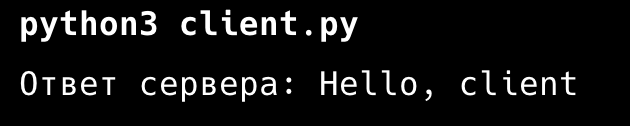
Практическое задание 2. Вычисления через TCP
Мой вариант первый, теорема Пифагора. Клиент спрашивает у пользователя два катета, отправляет их серверу одной строкой через пробел, сервер считает гипотенузу и отправляет ответ.
В отличие от UDP здесь сначала устанавливается соединение. Сервер вызывает listen, потом в цикле accept, и для каждого клиента получает отдельный сокет conn. После ответа соединение закрывается. Опцию SO_REUSEADDR я поставил, чтобы после перезапуска сервера порт сразу был свободен.
Если ввести не числа или отрицательный катет, сервер не падает, а возвращает текст ошибки.
Сервер:
import math
import socket
server = socket.socket(socket.AF_INET, socket.SOCK_STREAM)
server.setsockopt(socket.SOL_SOCKET, socket.SO_REUSEADDR, 1)
server.bind(("localhost", 8080))
server.listen(1)
print("Сервер запущен")
while True:
conn, addr = server.accept()
print(f"Подключился {addr}")
data = conn.recv(1024).decode()
try:
a, b = map(float, data.split())
if a <= 0 or b <= 0:
answer = "Катеты должны быть больше нуля"
else:
answer = f"Гипотенуза: {math.sqrt(a ** 2 + b ** 2):.4f}"
except ValueError:
answer = "Нужно передать два числа"
print(f"Катеты: {data}, ответ: {answer}")
conn.send(answer.encode())
conn.close()
Клиент:
import socket
a = input("Введите первый катет: ")
b = input("Введите второй катет: ")
client = socket.socket(socket.AF_INET, socket.SOCK_STREAM)
client.connect(("localhost", 8080))
client.send(f"{a} {b}".encode())
print(client.recv(1024).decode())
client.close()
Пример работы. Обычный запрос:
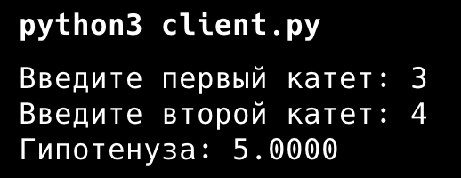
Вместо числа ввел текст:
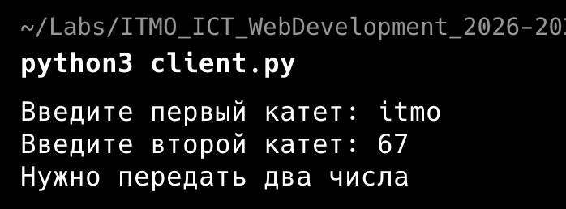
Отрицательные катеты:
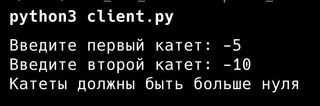
Все три запроса на стороне сервера:
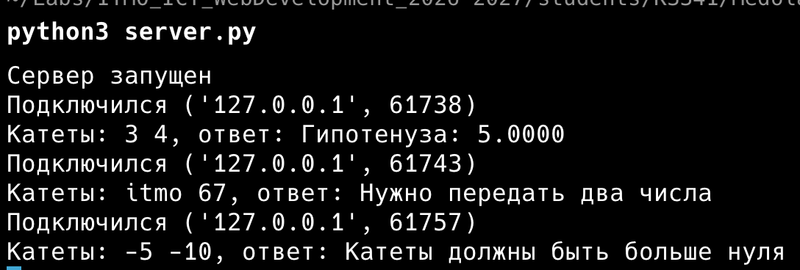
Практическое задание 3. Раздача HTML-страницы по HTTP
HTTP-ответ это обычный текст: строка статуса, заголовки, пустая строка и тело. Я читаю index.html в байтах, чтобы Content-Length совпал с реальной длиной. Если читать как строку, русские буквы в UTF-8 занимают по два байта и длина получится неправильной. Заголовки и тело отправляются одним вызовом sendall.
Сервер:
import socket
server = socket.socket(socket.AF_INET, socket.SOCK_STREAM)
server.setsockopt(socket.SOL_SOCKET, socket.SO_REUSEADDR, 1)
server.bind(("localhost", 8080))
server.listen(1)
print("Сервер запущен на http://localhost:8080")
while True:
conn, addr = server.accept()
request = conn.recv(1024).decode()
print(request.split("\r\n")[0])
with open("index.html", "rb") as f:
body = f.read()
headers = (
"HTTP/1.1 200 OK\r\n"
"Content-Type: text/html; charset=utf-8\r\n"
f"Content-Length: {len(body)}\r\n"
"Connection: close\r\n"
"\r\n"
)
conn.sendall(headers.encode() + body)
conn.close()
Страница index.html:
<!DOCTYPE html>
<html lang="ru">
<head>
<meta charset="UTF-8">
<title>Лабораторная работа 1</title>
</head>
<body>
<h1>Привет!</h1>
<p>Эту страницу отдал сервер на сокетах.</p>
</body>
</html>
Страница в браузере:
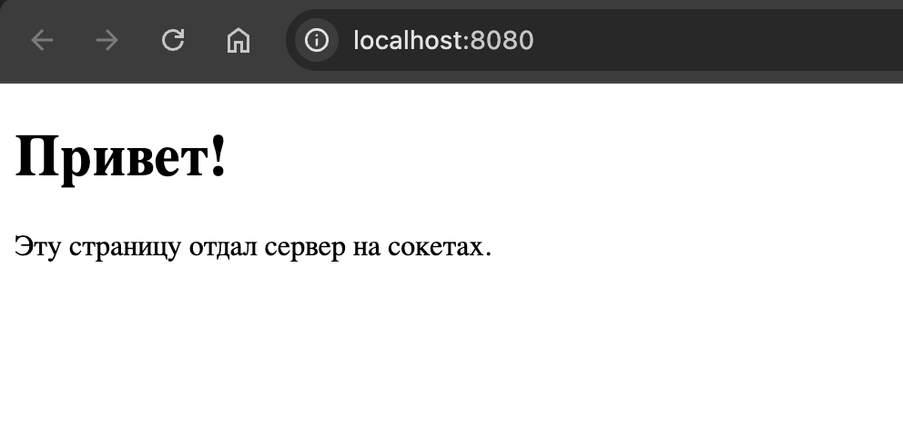
Сервер:
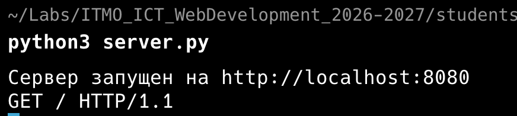
Заголовки ответа через curl:
$ curl -i http://localhost:8080
HTTP/1.1 200 OK
Content-Type: text/html; charset=utf-8
Content-Length: 264
Connection: close
<!DOCTYPE html>
...
Практическое задание 4. Чат на сокетах
Я сделал многопользовательский чат на TCP с потоками.
Сервер хранит словарь clients, где ключ это сокет подключения, а значение имя пользователя. На каждое новое подключение запускается отдельный поток с функцией handle. Первым сообщением клиент присылает свое имя, так пользователи и различаются. Все следующие сообщения сервер рассылает остальным участникам с подписью отправителя. Словарь меняют сразу несколько потоков, поэтому доступ к нему закрыт через threading.Lock.
Выйти можно командой /exit или просто закрыв клиент. В обоих случаях сервер удаляет пользователя из словаря и сообщает остальным, что он вышел.
Клиент один на всех. Каждый пользователь запускает тот же client.py в своем терминале и вводит имя. Прием сообщений идет в отдельном потоке, иначе клиент не видел бы чужие сообщения, пока ждет ввода в input.
Сервер:
import socket
import threading
clients = {}
lock = threading.Lock()
def broadcast(message, sender=None):
with lock:
for conn in list(clients):
if conn != sender:
try:
conn.send(message.encode())
except OSError:
pass
def handle(conn):
name = conn.recv(1024).decode().strip()
with lock:
clients[conn] = name
print(f"{name} подключился")
broadcast(f"{name} вошел в чат", conn)
while True:
try:
data = conn.recv(1024)
except OSError:
break
if not data:
break
message = data.decode()
if message == "/exit":
break
print(f"{name}: {message}")
broadcast(f"{name}: {message}", conn)
with lock:
del clients[conn]
conn.close()
print(f"{name} отключился")
broadcast(f"{name} вышел из чата")
server = socket.socket(socket.AF_INET, socket.SOCK_STREAM)
server.setsockopt(socket.SOL_SOCKET, socket.SO_REUSEADDR, 1)
server.bind(("localhost", 8080))
server.listen()
print("Сервер чата запущен")
while True:
conn, addr = server.accept()
threading.Thread(target=handle, args=(conn,), daemon=True).start()
Клиент:
import socket
import threading
def receive(client):
while True:
try:
data = client.recv(1024)
except OSError:
break
if not data:
break
print(data.decode())
name = input("Ваше имя: ")
client = socket.socket(socket.AF_INET, socket.SOCK_STREAM)
client.connect(("localhost", 8080))
client.send(name.encode())
print("Вы в чате. Для выхода напишите /exit")
threading.Thread(target=receive, args=(client,), daemon=True).start()
while True:
message = input()
if not message:
continue
client.send(message.encode())
if message == "/exit":
break
client.close()
Пример работы с тремя пользователями. Андрей зашел первым, потом Маша и Петя. Андрей попрощался и вышел командой /exit.
Терминал Андрея:
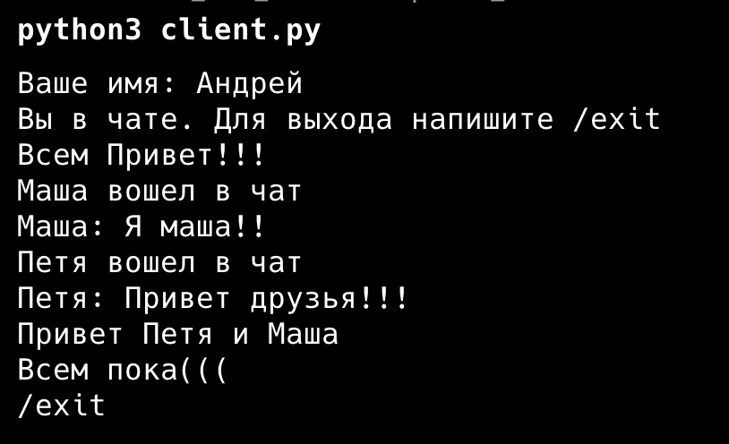
Терминал Маши:
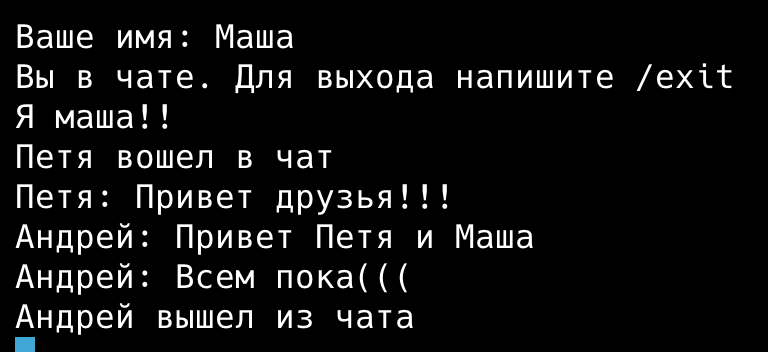
Терминал Пети:
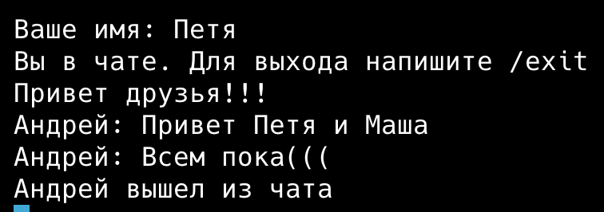
Сервер:
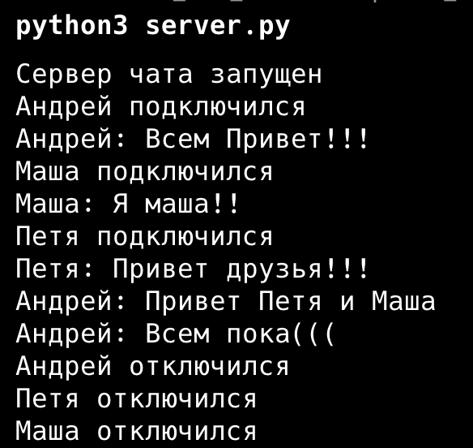
Практическое задание 5. Простой веб-сервер (GET/POST)
Здесь сервер сам разбирает HTTP-запрос. Сначала я делю данные по первой пустой строке \r\n\r\n на заголовки и тело. Из первой строки берутся метод и путь. Заголовки складываются в словарь, из него нужен только Content-Length. Если тело пришло не целиком, сервер дочитывает его, пока длина не совпадет.
Оценки хранятся в словаре, где ключ это дисциплина, а значение список оценок. Так две оценки по математике попадают в одну запись, а не в две строки. Новая оценка добавляется через setdefault, он создает пустой список для нового предмета.
GET на / возвращает страницу с таблицей оценок и формой. Форма отправляет POST на тот же адрес. Тело POST приходит в виде subject=...&grade=..., его разбирает parse_qs, заодно он декодирует русские буквы из процентной кодировки. После успешного POST сервер отвечает 303 See Other и перенаправляет на главную, чтобы при обновлении страницы форма не отправлялась повторно. Если поле пустое, будет 400, на неизвестный путь 404.
import socket
from urllib.parse import parse_qs
grades = {}
def make_page():
rows = ""
for subject, marks in grades.items():
rows += f"<tr><td>{subject}</td><td>{', '.join(marks)}</td></tr>"
return f"""<!DOCTYPE html>
<html lang="ru">
<head><meta charset="UTF-8"><title>Журнал оценок</title></head>
<body>
<h1>Журнал оценок</h1>
<table border="1">
<tr><th>Дисциплина</th><th>Оценки</th></tr>
{rows}
</table>
<h2>Добавить оценку</h2>
<form method="POST" action="/">
<input name="subject" placeholder="Дисциплина" required>
<input name="grade" placeholder="Оценка" required>
<button type="submit">Отправить</button>
</form>
</body>
</html>"""
def send_response(conn, status, body=""):
body = body.encode()
headers = f"HTTP/1.1 {status}\r\nContent-Type: text/html; charset=utf-8\r\nContent-Length: {len(body)}\r\n"
if status.startswith("303"):
headers += "Location: /\r\n"
conn.sendall((headers + "\r\n").encode() + body)
server = socket.socket(socket.AF_INET, socket.SOCK_STREAM)
server.setsockopt(socket.SOL_SOCKET, socket.SO_REUSEADDR, 1)
server.bind(("localhost", 8080))
server.listen()
print("Сервер запущен на http://localhost:8080")
while True:
conn, addr = server.accept()
data = conn.recv(4096)
if not data:
conn.close()
continue
head, _, body = data.partition(b"\r\n\r\n")
lines = head.decode().split("\r\n")
method, path = lines[0].split()[:2]
print(method, path)
headers = {}
for line in lines[1:]:
key, _, value = line.partition(":")
headers[key.lower()] = value.strip()
length = int(headers.get("content-length", 0))
while len(body) < length:
body += conn.recv(4096)
if method == "GET" and path == "/":
send_response(conn, "200 OK", make_page())
elif method == "POST" and path == "/":
params = parse_qs(body.decode())
subject = params.get("subject", [""])[0].strip()
grade = params.get("grade", [""])[0].strip()
if subject and grade:
grades.setdefault(subject, []).append(grade)
send_response(conn, "303 See Other")
else:
send_response(conn, "400 Bad Request", "<h1>Нужно указать дисциплину и оценку</h1>")
else:
send_response(conn, "404 Not Found", "<h1>Страница не найдена</h1>")
conn.close()
Пример работы. Я добавил несколько оценок через форму в браузере, по некоторым предметам больше одной:
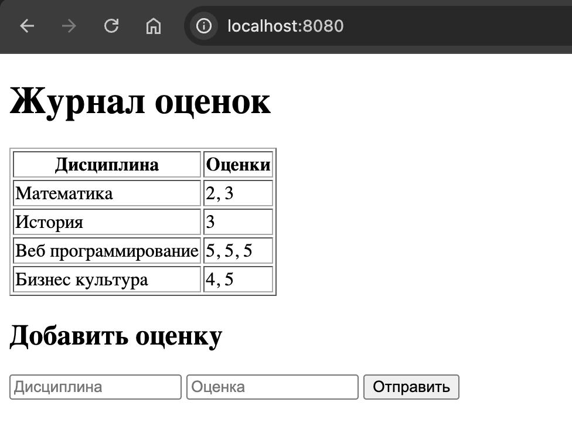
Математика записалась одной строкой с двумя оценками, а у веб программирования в одной строке сразу три оценки. Отдельных строк с одинаковым названием дисциплины нет, как и требуется.
Сервер после каждого POST отвечает перенаправлением, поэтому браузер сразу делает GET:
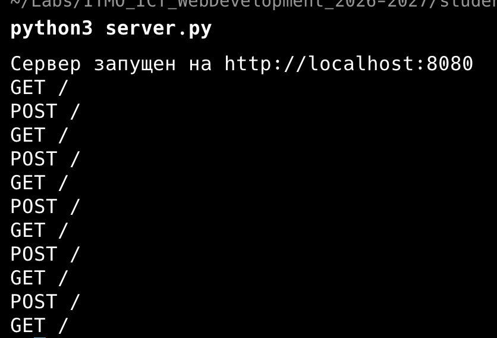
Проверка ошибок:
$ curl -si -d "subject=&grade=5" http://localhost:8080/ | head -1
HTTP/1.1 400 Bad Request
$ curl -si http://localhost:8080/abc | head -1
HTTP/1.1 404 Not Found
Вывод
Все пять заданий работают. Проще всего был UDP, там хватило sendto и recvfrom. Остальное я делал на TCP, потому что там данные доходят целиком и по порядку.
Сложнее всего получился чат. Словарь клиентов меняют сразу несколько потоков, поэтому без блокировки при одновременном входе и выходе пользователей рассылка могла упасть. В пятом задании HTTP-запрос пришлось разбирать руками, и это оказался обычный текст, который несложно разделить на части.